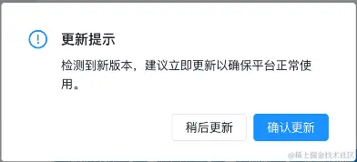
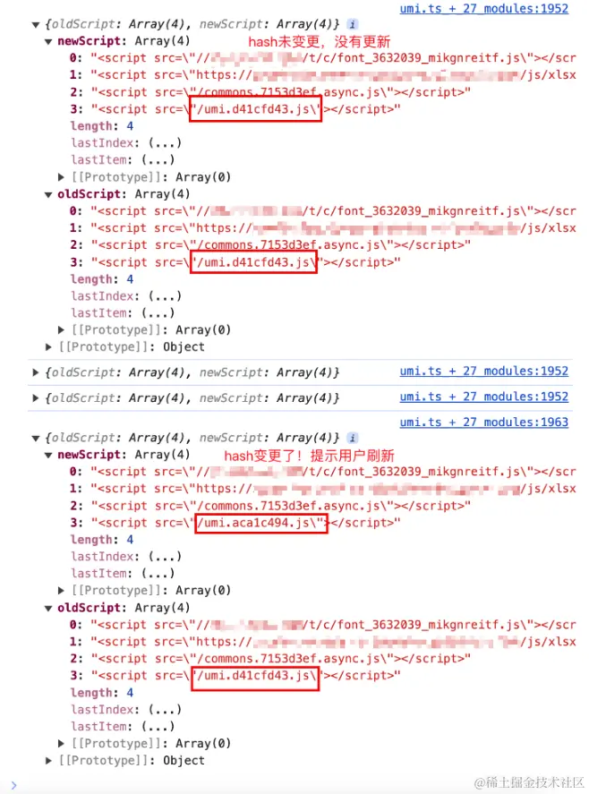
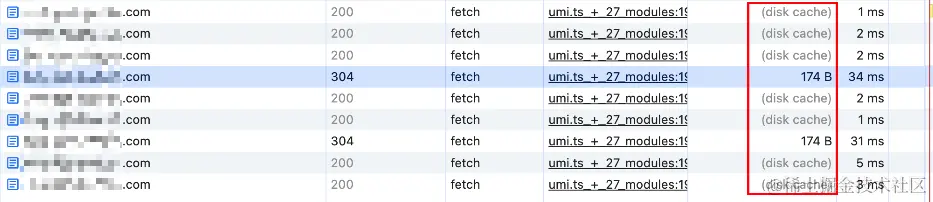
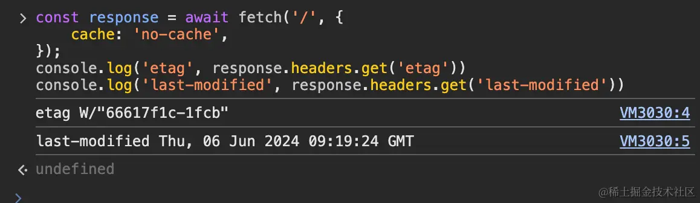

2024-06-14 18:46:16 · YinHao
单页应用（Single Page Application，简称 SPA）是一种现代 Web 应用程序架构，通过动态重载页面中的部分内容来提供更流畅和更响应式的用户体验。由于 SPA 在客户端（用户的浏览器）运行大量的 JavaScript 代码，并且与传统的多页应用不同，它不会每次操作都从服务器重新加载整个页面内容，因此在性能和用户体验上有显著优势。然而这种应用也存在一定弊端，譬如当服务端更新时（接口请求体和响应体结构发生变化），用户所使用的网页静态资源没有同步更新，就有可能导致报错。
在传统的多页 Web 应用中，每次用户访问页面时，都会从服务器获取最新的页面和资源，因此版本更新相对简单，用户总是能获取到最新的版本。然而，SPA 在首次加载后，前端的静态资源会缓存在浏览器内存中，且在整个使用过程中通常不会自动重新加载。这种特性意味着如果应用有新的版本发布，用户可能仍在使用旧版本，无法立即获得最新的功能、修复或安全更新。
我们想实现这样一个效果，场景是：
攻城狮发版完成，客户端检测到有版本更新后给用户一个更新提示，让用户知道有新版本更新了

先来实现这个弹窗：
import { Modal } from "antd";
function updateNotice() {
Modal.confirm({
title: "更新提示",
content: "检测到新版本，建议立即更新以确保平台正常使用。",
okText: "确认更新",
cancelText: "稍后更新",
onOk: () => {
window.location.reload();
},
});
}
该方案需要 webpack 开启打包文件带上 hash 值，具体配置不在此处展开。
通过定期获取服务器的前端资源，匹配资源中的 <script> 标签，对比前后标签是否一致，来检测是否有新的版本发布。
// 存储当前脚本标签的哈希值集合
let scriptHashes = new Set();
let timer = undefined;
/**
* 从首页获取脚本标签的哈希值集合
* @returns {Promise<Set<string>>} 返回包含脚本标签的哈希值的集合
*/
async function fetchScriptHashes() {
// 获取首页HTML内容
const html = await fetch("/").then((res) => res.text());
// 正则表达式匹配所有<script>标签
const scriptRegex = /<script(?:\s+[^>]*)?>(.*?)<\/script\s*>/gi;
// 获取匹配到的所有<script>标签内容
const scripts = html.match(scriptRegex) ?? [];
// 将脚本标签内容存入集合并返回
return new Set(scripts);
}
/**
* 比较当前脚本标签的哈希值集合与新获取的集合，检测是否有更新
*/
async function compareScriptHashes() {
// 获取新的脚本标签哈希值集合
const newScriptHashes = await fetchScriptHashes();
if (scriptHashes.size === 0) {
// 初次运行时，存储当前脚本标签哈希值
scriptHashes = newScriptHashes;
} else if (
scriptHashes.size !== newScriptHashes.size ||
![...scriptHashes].every((hash) => newScriptHashes.has(hash))
) {
// 如果脚本标签数量或内容发生变化，则认为有更新
console.info("更新了", {
oldScript: [...scriptHashes],
newScript: [...newScriptHashes],
});
// 清除定时器
clearInterval(timer);
// 提示用户更新
updateNotice();
} else {
// 没有更新
console.info("没更新", {
oldScript: [...scriptHashes],
});
}
}
// 每60秒检查一次是否有新的脚本标签更新
timer = setInterval(compareScriptHashes, 60000);
打印结果示例：

轮询效果：返回 304，代表资源没有变化，服务器不会返回资源，而是让客户端从本地资源获取。当新版本发布时，服务器资源发生变化

轮询效果： 有新版本发布时，服务器资源更新，才会返回新的资源给客户端； 资源未更新时，服务器返回 304，不会返回资源，而是让客户端从本地缓存里获取，资源消耗相对较小。
本方案实现同方案一类似，但与方案一相比，方案二更直接地利用了 HTTP 协议提供的缓存控制机制，以确定页面是否发生了变化。
let versionTag = null; // 版本标识
let timer = undefined;
/**
* 获取首页的 ETag 或 Last-Modified 值，作为当前版本标识
* @returns {Promise<string|null>} 返回 ETag 或 Last-Modified 值
*/
const getVersionTag = async () => {
const response = await fetch("/", {
cache: "no-cache",
});
return response.headers.get("etag") || response.headers.get("last-modified");
};
/**
* 比较当前的 ETag 或 Last-Modified 值与最新获取的值
*/
const compareTag = async () => {
const newVersionTag = await getVersionTag();
if (versionTag === null) {
// 初次运行时，存储当前的 ETag 或 Last-Modified 值
versionTag = newVersionTag;
} else if (versionTag !== newVersionTag) {
// 如果 ETag 或 Last-Modified 发生变化，则认为有更新
console.info("更新了", {
oldVersionTag: versionTag,
newVersionTag: newVersionTag,
});
// 清除定时器
clearInterval(timer);
// 提示用户更新
updateNotice();
} else {
// 没有更新
console.info("没更新", {
oldVersionTag: versionTag,
newVersionTag: newVersionTag,
});
}
};
// 每60秒检查一次是否有新的 ETag 或 Last-Modified 值
timer = setInterval(compareTag, 60000);
